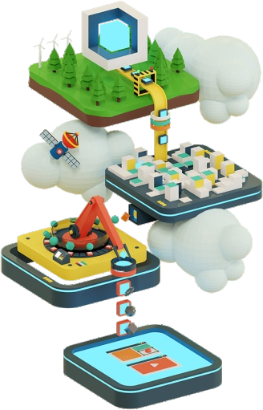
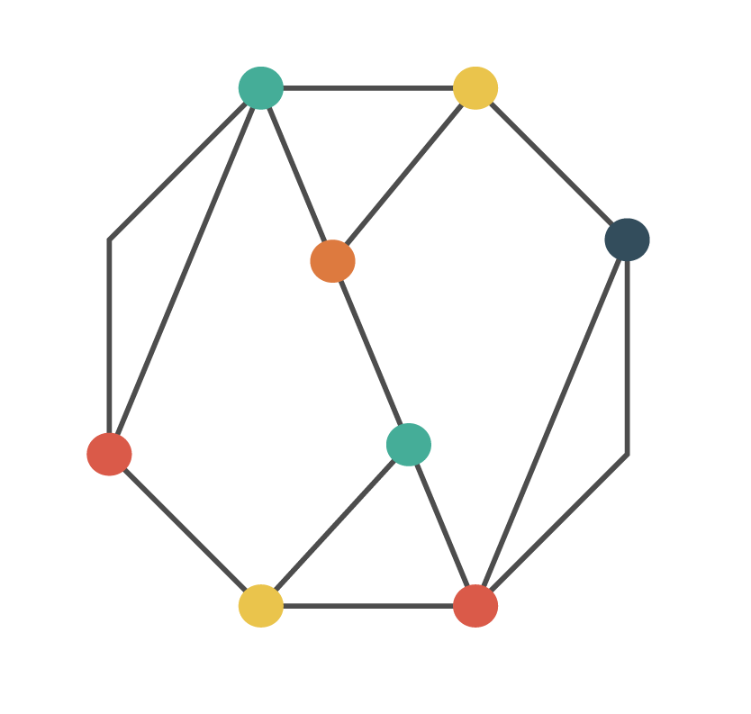

Un ciclo de cinco pasos para convertir conocimiento en capacidades
La misma metodología en todos los proyectos, del diagnóstico inicial a la evaluación de resultados.


Los nodos del isologo son los pasos
Cada paso alimenta al siguiente y la evaluación vuelve a la formulación: el conocimiento que se produce en un proyecto entra como insumo del siguiente.
QUÉ HACEMOSIdentificamos el problema de conocimiento con tu equipo y acordamos los resultados esperados.
QUÉ ENTREGAMOSDiagnóstico de necesidades y teoría de cambio del proyecto.
QUÉ OBTIENESClaridad sobre el alcance antes de invertir en producción.
QUÉ HACEMOSDefinimos la experiencia: arquitectura de contenidos, actividades y línea gráfica.
QUÉ ENTREGAMOSDiseño instruccional, guiones, prototipos y plan de producción.
QUÉ OBTIENESUn plan aprobado y validado antes de desarrollar.
QUÉ HACEMOSProducimos contenidos, piezas audiovisuales y plataformas con ciclos de revisión.
QUÉ ENTREGAMOSOVA, videos, podcasts, publicaciones y desarrollos web accesibles.
QUÉ OBTIENESProductos propios, reutilizables y con estándares abiertos.
QUÉ HACEMOSMontamos, convocamos y acompañamos a los participantes durante la operación.
QUÉ ENTREGAMOSMontaje en plataforma, tutoría, mesa de ayuda y comunicación.
QUÉ OBTIENESParticipación real, no solo inscripciones.
QUÉ HACEMOSMedimos aprendizajes, uso y cambios; sistematizamos lo aprendido.
QUÉ ENTREGAMOSInforme de resultados, tableros de seguimiento y sistematización.
QUÉ OBTIENESEvidencia para reportar a tu financiador y decidir el siguiente paso.
Principios de trabajo
Centrado en las personas
Diseñamos desde la experiencia de quien aprende, no desde el temario.
Basado en evidencia
Cada decisión se sostiene en datos de uso y de aprendizaje.
Accesible e inclusivo
WCAG 2.1 AA, lenguaje claro y contenidos multilingües.
Abierto y reutilizable
Entregamos productos que tu organización puede seguir usando sin nosotros.